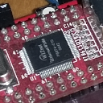

Elektronik backen, ähh - reparieren

Ich hatte mir vor einiger Zeit einen billigen PoE-Switch aus China angeschafft, um Raspis und ähnliche Kleinstcomputer darüber mit Strom und Netzwerk zu versorgen. Dazu verwendete ich entsprechende PoE-Splitter.
Nach einiger Zeit stellte ich fest, dass aus dem Splitter kein Strom mehr kam und ich wechselte ihn aus. Da ich faul bin, entsorgte ich das defekte Teil nicht, sondern deponierte es wieder im Schrank in der Grabbelkiste.
Dasselbe Fehlerbild wiederholte sich und ich war erneut zum Austausch des Splitters gezwungen. Wer beschreibt aber mein Erstaunen, als ich feststellte, dass der Splitter, den ich aus dem Schrank genomen hatte und der funktionierte genau derjenige war, den ich beim vorhergehenden Ausfall als defekt aussortiert hatte?
Systematische Tests folgten, bei denen sich herausstellte, dass es nicht am Splitter lag, sondern dass ich aus Versehen einen anderen Port am Switch benutzt hatte. Tatsächlich waren also einige der PoE-Ports am Switch ausgefallen: Datenverkehr war zwar noch möglich, jedoch lieferten einige Ports keinen Strom mehr. Das lag auch nicht am Gesamt-Powerbudget - das war noch lange nicht erreicht.
Ich knirschte zwar mit den Zähnen, aber da ich nicht 8 PoE-Ports brauchte, lebte ich damit. Leider hörte das PoE-Absterben im Switch nicht auf: Als irgendwann nur noch zwei der Ports Strom lieferten war meine Grenze erreicht. Ich orderte einen neuen PoE-Switch und ersetzte den langsam vor sich hin sterbenden.
Damit hatte ich jetzt Raum für Experimente - und den nutzte ich wie folgt: Zwei geschätzte ehemalige Kollegen hatten mir erzählt, dass man Graphikkarten durchaus wieder zum Mitarbeiten überreden kann, wenn masn sie für einige Zeit in den aufgeheizten Backofen legt. Dadurch können - so die Hypothese schwach gewordene Lötstellen auf der Platine wieder erfrischt werden. Nachdem ich die Platine meines Switches zunächst visuell begutachtet hatte und keine Schäden oder Ausfälle finden konnte, griff ich zu diesem Strohhalm, da auch ich nicht über einen reflow-Ofen der benötigten Dimension verfügte.
Zu diesem Verfahren gilt es aber, einige Vorsichtsmaßnahmen zu beachten:
- unbedingt nur die Platine ohne Gehäuse(teile) in den Ofen geben: Die Gehäuse sind selten bei solchen hohen Temperaturen
- die elektronischen Komponenten unbedingt nie nackt, sondern immer mit Bratschlauch umhüllt in den Garraum geben: Elektronik
Meine Versuchsreihe bestand aus zwei Versuchen: der erste, bei dem ich mit geringerer Temperatur arbeitete, brachte keine Verbesserung. Beim zweiten setzte ich die Platine einer Temperatur von 200 Grad für eine halbe Stunde (Umluft) aus - danach hatte ich wieder 8 funktionierende PoE-Ports in meinem Switch!
Ich will nicht behaupten, dass man mit einem Backofen generell Elektronik immer wiederbeleben kann - aber nach meinen Erfahrungen ist es den Versuch allemal wert!


Vor 5 Jahren hier im Blog
-
DIY EBook-Reader
01.06.2019
Ein Kollege von mir begann mich bereits vor ein paar Wochen auszufragen, was mein nächstes Urlaubsprojekt wäre. Bisher musste ich ihm sagen, dass ich noch keine Pläne hatte. Das hat sich jetzt geändert:
Weiterlesen...
Tags
Android Basteln C und C++ Chaos Datenbanken Docker dWb+ ESP Wifi Garten Geo Git(lab|hub) Go GUI Gui Hardware Java Jupyter Komponenten Links Linux Markdown Markup Music Numerik PKI-X.509-CA Python QBrowser Rants Raspi Revisited Security Software-Test sQLshell TeleGrafana Verschiedenes Video Virtualisierung Windows Upcoming...
Neueste Artikel
- sQLshell Version 7.7pre4 build 10491
Eine neue Version der sQLshell ist verfügbar!
Weiterlesen... - LinkCollections 2024 IV
Nach der letzten losen Zusammenstellung (für mich) interessanter Links aus den Tiefen des Internet von 2024 folgt hier gleich die nächste:
Weiterlesen... - sQLshell, SQLite und Redis - oh my!
Ich habe in letzter Zeit hin und wieder mit der sQLshell und SQLite herumgespielt - Neulich wurde ich gefragt, ob die sQLshell eigentlich auch Redis kann...
Weiterlesen...
Manche nennen es Blog, manche Web-Seite - ich schreibe hier hin und wieder über meine Erlebnisse, Rückschläge und Erleuchtungen bei meinen Hobbies.
Wer daran teilhaben und eventuell sogar davon profitieren möchte, muß damit leben, daß ich hin und wieder kleine Ausflüge in Bereiche mache, die nichts mit IT, Administration oder Softwareentwicklung zu tun haben.
Ich wünsche allen Lesern viel Spaß und hin und wieder einen kleinen AHA!-Effekt...
PS: Meine öffentlichen GitHub-Repositories findet man hier - meine öffentlichen GitLab-Repositories finden sich dagegen hier.